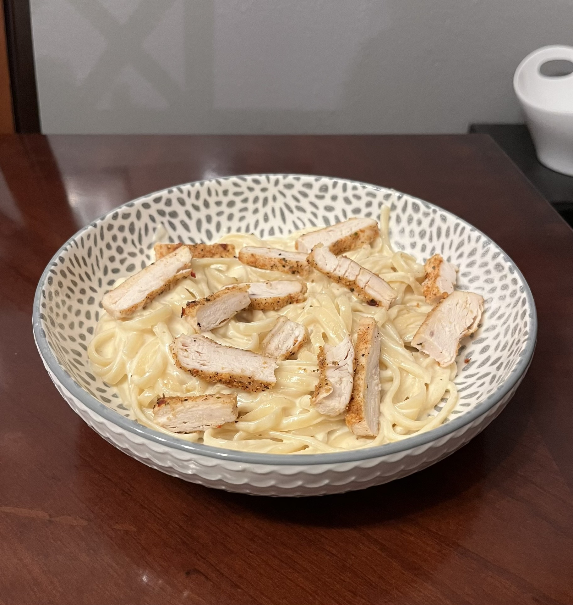

Chicken Alfredo
Home

Description
Easy-ish recipe for chicken alfredo that my dad made for us.
Ingredients
- 3 cutlets of chicken thighs
- 3-5 cloves of garlic
- 1/2 red onion (but you can probably use white as well)
- 4 jars of 22 oz alfredo sauce
- garlic powder
- onion powder
- 2 boxes of 32 oz (2 lb) penne pasta
- oil
- salt (optional)
- pepper (optional)
- Parmesan cheese (optional)
Steps
- Bring a pot of water to boil for the pasta.
- While water is boiling, cut chicken into small pieces (how ever small you want it in your pasta).
- Dice the garlic and onion.
- Heat another pot and add oil. Add garlic and cook until it starts to brown and smell good.
- Add onion and cook until soft.
- Add chicken and cook, turning it occasionally to make sure everything gets cooked evenly.
- Once the water boils, add penne pasta and cook according to instructions in the box. usually for 9-11 minutes.
- Once chicken is cooked, add the jars of alfredo sauce to the pot with the chicken. Cook for a few minutes. Add garlic powder and onion powder to taste. Add salt and pepper to taste.
- Drain the pasta once it's cooked to your liking.
- Mix the pasta with the sauce and enjoy! You can sprinkle some Parmesan cheese on top if you like.